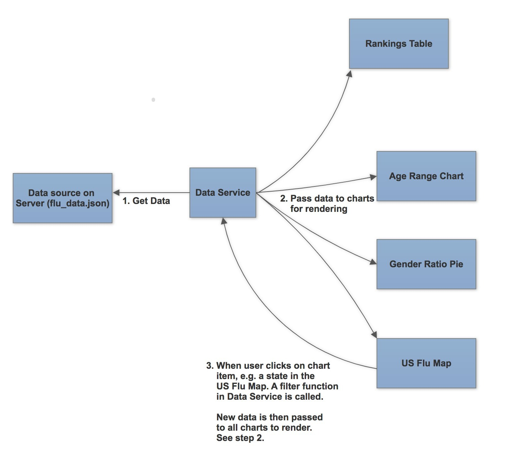

I was given an opportuity to imagine how we could use data visualization to work with flu cases. It was fairly open ended so I was free to do what I thought was best. Since I am fairly new to this area, I started this project by identifying a core user and a set of user journeys that I could build a story around.
Target user: Sarah, a US based market reacher working for Pfizer. She is trying to figure out where to target the flu vaccines for sale in the next year so that Pfizer can help the most number of people while also growing its market share.
(Done) As Sarah, I want to know which state has the highest flu cases so that I know where to focus my research.
(Done) As Sarah, I want to be able to see which state has the most flu cases so that I can target particular demographics in my market campaign.
(To do) As Sarah, I want to know the future flu vaccine market so that I can help company better allocate resources in different product portfolios.
(To do) As Sarah, I'd like to know which state has the biggest competitors so I can decide whether to comptete against them in that market.
Initially I looked for flu data on the WHO and CDC’s website, but I could not find much. Since time was limited, I decided to shift my focus to build the application, so I generated a sample dataset.
Building individual charts was not too hard once I remembered how to do this again.
However story #2 required the filtering in one chart to affect the display of others. Therefore all components needed to share the same data source. I created FluDataService to unify the data flow between the charts.
Whenever a chart needs to filter something, e.g. show only the flu cases in California, the chart tells FluDataService to perform the filtering, and then update all charts with the new filtered data.Here is a diagram showing how the data flows between the charts:
